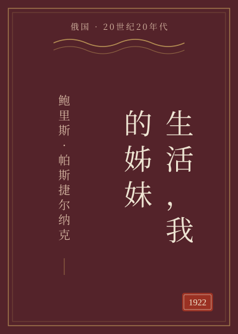
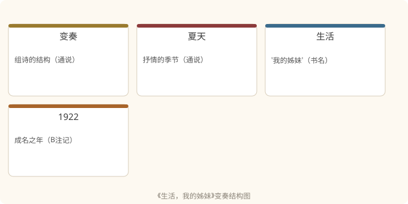

生活，我的姊妹
一、基本信息
| 作者 | 帕斯捷尔纳克 |
|---|---|
| 成书/出版 | 1922年（作者页注记：Britannica——生活，我的姊妹 (1922)——成名诗集） Boris Pasternak — Encyclopaedia Britannica（百科全书） |
| 国别/地区 | 俄国 |
| 时代 | 近代 · 20世纪20年代 |
| 体裁 | 诗集 |
| 语言 | 俄语 |

《生活，我的姊妹》变奏结构图（主题·结构图）
二、创作背景
作者页注记：生活，我的姊妹 (1922)——'成名诗集（Britannica）'。
Britannica：帕斯捷尔纳克——1958诺奖（《日瓦戈医生》作者——交叉）。
题材（通说待核）：'主题变奏'式的抒情短诗——夏日与返祖的梦。
三、内容脉络
（通说待核）以'变奏'为题的组诗：夏日的旅程。
（通说待核）'生活，我的姊妹'开篇（不采为引文）。
四、主要人物表
| 人物 | 身份 | 说明 |
|---|---|---|
| 抒情'我' | 诗人 | （通说待核） |
五、主题与艺术特点
- '成名诗集'（B注记）。
- 抒情与革命的并置（通说待核）。
- '变奏'的音乐结构（通说待核）。
六、影响与评论
- Britannica：成名诗集（作者页注记）。
Boris Pasternak — Encyclopaedia Britannica（百科全书） - Britannica：1958诺奖（作者页交叉）。
Boris Pasternak — Encyclopaedia Britannica（百科全书）
七、阅读建议
难点
- '变奏'组诗结构。
- 未来主义余响（通说待核）。
- 《生活，我的姊妹》中译本（人民文学等——通说待核）。
- 俄文原版（公有领域状态待核）。
帕斯捷尔纳克诗歌首选；后接《日瓦戈医生》。
八、待核实
- 1922年出版细节待核。
- 组诗篇目核对（通说）。
- '成名'评价出处核对。